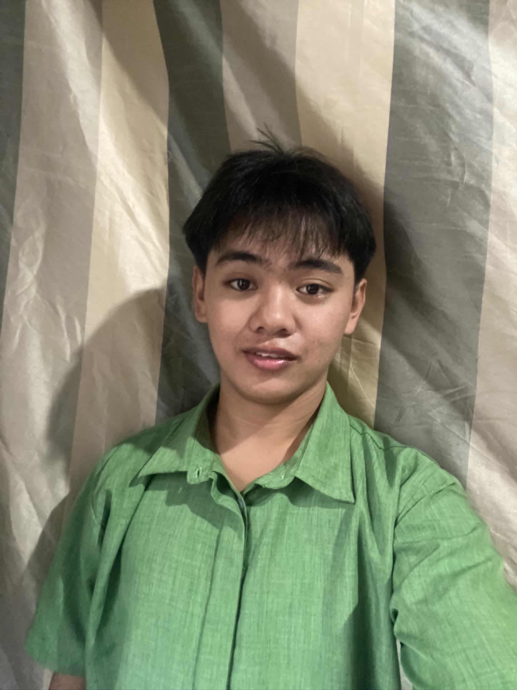

BSIT STUDENT
Hi, I'm Frince Nacua
BSIT Student | Aspiring IT Professional
Welcome to my personal portfolio. I am passionate about technology, programming, web development, and continuously improving my technical skills.
Learn More About Me
About Me
Who I Am
I am Frince Nacua, an 18-year-old student currently pursuing a Bachelor of Science in Information Technology at Central Philippines State University (CPSU).
I am a motivated, responsible, and adaptable individual who enjoys learning new things, solving problems, and exploring new technologies.
Through academic activities and personal projects, I continue to develop my knowledge and practical skills as I work toward becoming a successful IT professional.
Personal Information
Full Name: Frince Nacua
Age: 18 Years Old
Birthday: September 25, 2007
Location: Vallehermoso, Negros Oriental, Philippines
University: Central Philippines State University
Program: Bachelor of Science in Information Technology
Email: frincenacua@gmail.com
Phone: 09757631943
Professional Profile
I am an aspiring Information Technology professional with a growing interest in programming, web development, and computer technology.
I am continuously building my knowledge and skills through hands-on practice, academic activities, and personal projects.
My goal is to develop strong technical and problem-solving skills that will help me contribute to meaningful and innovative technology solutions in the future.
Skills
Computer Skills
- Basic Computer Troubleshooting
- Microsoft Word
- Microsoft PowerPoint
- Microsoft Office Applications
- Basic Programming
- Basic Web Development
Personal Skills
- Communication
- Teamwork and Collaboration
- Problem-Solving
- Creativity
- Adaptability
- Responsibility
- Willingness to Learn
- Continuous Improvement
Featured Projects
Personal Portfolio Website
A personal portfolio website designed to showcase my background, education, technical skills, achievements, interests, and projects.
Technologies: HTML, CSS
C++ Programming Projects
A collection of programming activities and projects demonstrating my understanding of fundamental programming concepts and basic data structures.
Topics: Arrays, Stacks, Queues, Functions, Conditional Statements, Loops
Language: C++
Academic Projects
A collection of school activities and academic projects related to Information Technology, programming, computer systems, and web development.
These projects allow me to apply what I learn in the classroom and improve my practical technical skills.
Education & Achievements
Education
Bachelor of Science in Information Technology
Central Philippines State University (CPSU)
Currently pursuing my degree while developing skills in programming, computer technology, and web development.
Achievements & Certificates
- Certificate of Achievement
- Certificate of Recognition
- Academic Achievements
- Information Technology Activities
Interests & Hobbies
Career Objective
My goal is to become a skilled and successful Information Technology professional. I aim to continuously improve my programming, technical, and problem-solving abilities while gaining valuable experience through academic activities, personal projects, and future professional opportunities.
In the future, I hope to contribute to the development of useful, innovative, and meaningful technological solutions. I am committed to continuous learning, personal growth, and developing the skills necessary to succeed in the ever-evolving field of Information Technology.
Let's Connect
Contact Information
Email: frincenacua@gmail.com
Phone: 09757631943
Facebook: Frince Nacua
Instagram: @YoungFrince